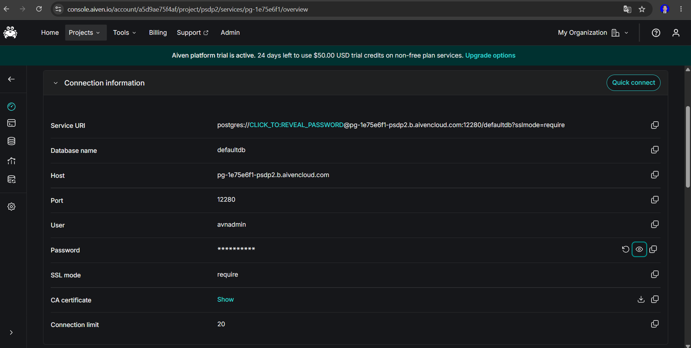
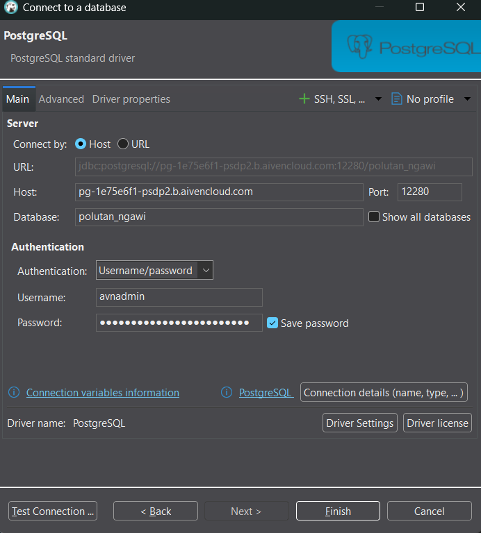
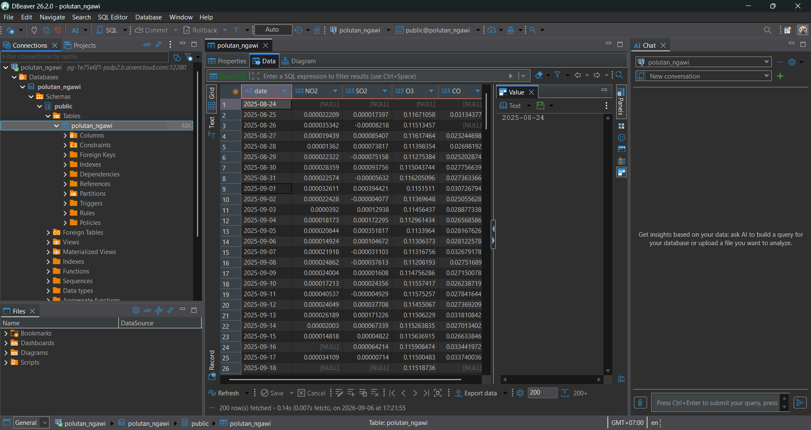
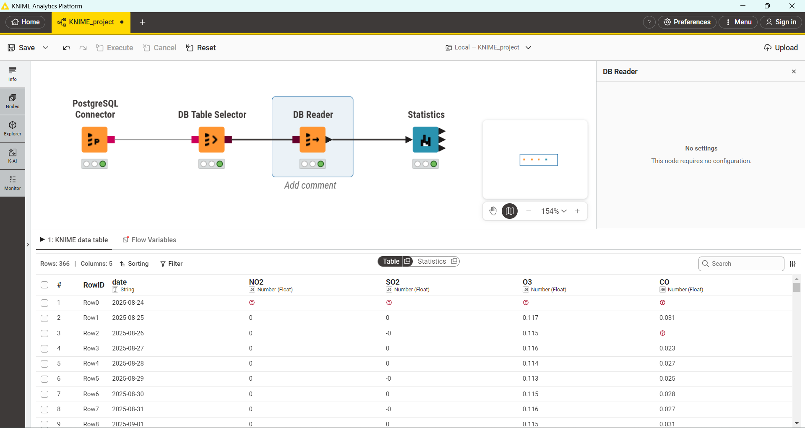
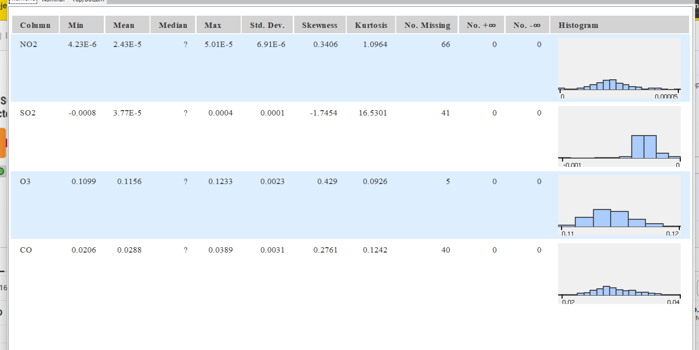

Memahami Angka-Angka di Balik Statistika Deskriptif#
Sebelum data polutan diolah lebih jauh — baik untuk mencari pola, membuat prediksi, atau membangun model — kita perlu dulu “berkenalan” dengan data itu sendiri. Proses inilah yang disebut Exploratory Data Analysis (EDA), dan salah satu alat bantunya adalah tabel ringkasan angka yang dikenal sebagai statistika deskriptif.
Tabel ini biasanya menyajikan sekumpulan angka untuk tiap variabel polutan (NO₂, CO, SO₂, O₃), dan masing-masing angka itu bercerita tentang sisi yang berbeda dari data. Berikut penjelasannya, dikelompokkan menjadi empat kategori besar.
Kategori 1: Di Mana Pusat & Batas Datanya?#
Rata-rata (Mean)
Ini adalah “titik tengah” data secara matematis — dihitung dengan menjumlahkan semua nilai lalu membaginya dengan berapa banyak data yang ada:
Sederhananya: total semua kadar polutan, dibagi jumlah hari pengamatan yang datanya valid.
Median
Kalau Mean dihitung lewat penjumlahan, Median justru dicari lewat pengurutan. Susun semua data dari yang terkecil sampai terbesar, lalu lihat nilai yang berada tepat di tengah:
Kalau jumlah datanya ganjil, Median = nilai pas di posisi tengah: \(X_{(n+1)/2}\)
Kalau genap, Median = rata-rata dua nilai yang berada di tengah: \(\frac{X_{n/2} + X_{(n/2)+1}}{2}\)
Kelebihan Median dibanding Mean: ia tidak mudah “terseret” kalau ada satu-dua nilai ekstrem (outlier) dalam data. Makanya kalau data punya banyak outlier, Median sering jadi patokan yang lebih jujur dibanding Mean.
Min & Max
Ini yang paling sederhana — cukup urutkan data dari kecil ke besar, lalu ambil ujung-ujungnya:
\(Min\) = data paling awal (\(X_1\))
\(Max\) = data paling akhir (\(X_n\))
Gunanya untuk tahu seberapa lebar “rentang” nilai yang pernah tercatat.
Overall Sum
Ini murni penjumlahan seluruh nilai dalam satu kolom, tanpa dibagi apa pun:
Kategori 2: Seberapa Menyebar Datanya?#
Standar Deviasi
Bayangkan tiap titik data punya “jarak” ke nilai rata-rata. Standar deviasi mengukur, secara rata-rata, seberapa jauh jarak-jarak itu:
Standar deviasi kecil → data cenderung berkumpul rapat di sekitar rata-rata (stabil).
Standar deviasi besar → data tersebar lebar, fluktuasinya tinggi.
Varians
Ini sebenarnya “saudara kembar” dari standar deviasi — bedanya cuma di akar kuadrat. Varians adalah standar deviasi sebelum diakarkan:
Karena itu, kalau kamu sudah tahu nilai standar deviasi, tinggal dikuadratkan saja untuk dapat variansnya (atau sebaliknya, diakarkan).
Kategori 3: Bagaimana Bentuk Sebaran Datanya?#
Skewness (Kemencengan)
Metrik ini menjawab pertanyaan: “apakah data condong ke satu sisi?”
Cara membacanya:
≈ 0 → sebaran data simetris, seperti kurva lonceng normal.
Positif → “ekor” data memanjang ke kanan, artinya ada beberapa nilai yang jauh lebih tinggi dari mayoritas. Contohnya SO₂ dengan skewness 2.124 — menandakan ada lonjakan-lonjakan tinggi sesekali di tengah data yang umumnya rendah.
Negatif → kebalikannya, ekor memanjang ke kiri.
Kurtosis (Keruncingan)
Kalau skewness bicara soal arah kemencengan, kurtosis bicara soal seberapa ekstrem nilai-nilai pencilan (outlier) yang muncul:
≈ 0 (Mesokurtik) → distribusinya “normal”, tidak terlalu runcing atau datar.
Positif (Leptokurtik) → puncak data tajam, ekornya tebal — pertanda banyak outlier ekstrem. Contoh nyatanya SO₂ dengan kurtosis 19.221, angka yang sangat tinggi.
Negatif (Platikurtik) → sebaran datanya lebih “rata”/datar dibanding distribusi normal. O₃ dengan nilai -0.375 termasuk kategori ini.
Kategori 4: Seberapa “Bersih” Kualitas Datanya?#
Kelompok metrik ini jadi penting banget khususnya untuk data yang diambil dari API atau citra satelit — karena proses perekamannya rawan gagal di tengah jalan.
No. missings — menghitung berapa banyak sel yang kosong sama sekali (tidak terekam) di periode tertentu.
No. NaNs — beda dengan missing murni, ini menghitung entri yang “ada” tapi nilainya tidak bisa didefinisikan secara matematis (misalnya hasil dari pembagian 0/0).
No. +infs / No. -infs — menghitung kemunculan nilai “tak terhingga” (infinity), baik positif maupun negatif.
Cara menghitungnya sama semua: tinggal cari dan hitung (frekuensi) berapa baris yang mengandung kondisi-kondisi khusus tersebut.
Implementasi Analisis Data Polutan: Dari Cloud Database ke KNIME#
Panduan ini menguraikan tahapan-tahapan untuk menghubungkan database PostgreSQL di platform Aiven, melakukan inspeksi data menggunakan HeidiSQL, serta mengekstraksi metrik statistika deskriptif memanfaatkan KNIME Analytics Platform.
Langkah 1: Memperoleh Kredensial Database dari Aiven#
Sebelum menyambungkan koneksi melalui aplikasi apa pun, kita membutuhkan informasi kredensial server.
Akses dashboard atau console Aiven, lalu arahkan ke proyek yang dimiliki.
Buka tab Overview pada layanan (service) PostgreSQL yang sedang beroperasi (
pg-c4fbe52).Pada bagian Connection information, catat parameter-parameter berikut ini:
Host:
pg-1e75e6f1-psdp2.b.aivencloud.comPort:
12280User:
avnadminPassword: (Klik ikon mata atau opsi copy untuk menyalin kata sandi rahasia)
SSL mode:
require
Pastikan Anda telah mengunduh sertifikat SSL (klik Show pada bagian CA certificate kemudian unduh) apabila client yang Anda gunakan mensyaratkannya.

Langkah 2: Mengonfigurasi Koneksi di dbeaver#
dbeaver digunakan untuk meninjau tabel beserta datanya secara langsung sebelum diproses lebih lanjut.
Buka aplikasi dbeaver. Pada panel sebelah kiri (Browser), klik new data conection
Pilih jenis database yang akan digunakan, pilih PostgreSQL.
Pada ke tab Connection, terapkan konfigurasi di bawah ini:
Host name/address: Isikan informasi Host yang diperoleh dari langkah 1.
Port: Isikan
12280(atau sesuai dengan Port pada langkah 1).Username: Ketikkan
avnadmin.Password: Tempelkan (paste) kata sandi dari langkah 1, dan centang opsi Save password?.
Klik Finish guna menyimpan konfigurasi dan memulai koneksi.

Langkah 3: Melakukan Inspeksi Tabel Data di DBeaver#
Setelah koneksi berhasil, kita perlu memverifikasi ketersediaan data mentah beserta kesesuaian formatnya.
Pada panel sebelah kiri DBeaver, navigasikan tree server yang baru dibuat menuju Databases >
polutan_ngawi> Schemas >public> Tables >polutan_ngawi.Klik dua kali (atau klik kanan lalu pilih View/Edit Data) pada tabel
polutan_ngawitersebut hingga terbuka tab Data.Pastikan kolom data deret waktu (time-series) telah ditampilkan dengan tepat, yang meliputi kolom
date,NO2,SO2,O3, danCO.Perlu diketahui bahwa pada tahapan ini merupakan hal yang lumrah bila dijumpai nilai
[NULL]pada beberapa baris (contohnya kolomNO2danSO2pada tanggal 2025-08-24, atau seluruh kolom polutan pada 2025-09-16). Nantinya, nilai tersebut akan teridentifikasi sebagai missing values pada saat tahap analisis.

Langkah 4: Menyusun Alur Kerja (Workflow) di KNIME#
Beralih menuju KNIME Analytics Platform guna menarik data dari database dan melakukan perhitungan statistiknya secara otomatis.
Jalankan KNIME Analytics Platform lalu buatlah workflow (alur kerja) yang baru.
Tarik (drag-and-drop) node di bawah ini dari Node Repository menuju ke workspace:
PostgreSQL Connector: Berfungsi menghubungkan KNIME dengan server Aiven.
DB Table Selector: Berfungsi untuk menyeleksi tabel di dalam database.
DB Reader: Berfungsi untuk memuat tabel ke dalam memori KNIME.
Statistics: Berfungsi untuk menghitung metrik-metrik statistik.
Hubungkan setiap node tersebut mengikuti urutan yang telah disebutkan di atas.
Konfigurasi Node:
Lakukan klik ganda pada PostgreSQL Connector, lalu isikan Hostname, Port, Database name (
Polutan_ngawi), serta Credentials (User & Password) yang identik dengan langkah 1 dan 2.Lakukan klik ganda pada DB Table Selector, kemudian pilih skema
publicserta tabelpolutan_ngawi.
Klik kanan pada DB Reader lalu pilih opsi Execute. Jika prosesnya berhasil, lampu indikator di bagian bawah node akan berubah menjadi hijau.

Langkah 5: Membaca Output Statistika Deskriptif#
Setelah data berhasil dimuat ke dalam KNIME, tahapan yang terakhir adalah menjalankan perhitungan analitiknya.
Klik kanan pada node Statistics kemudian pilih Execute.
Bila lampu indikator telah berwarna hijau, klik kanan kembali pada node Statistics lalu pilih menu Statistics View (atau ikon bergambar kaca pembesar).
Tabel metrik statistik akan ditampilkan, yang memuat:
Min, Max, Mean: Guna mengamati rentang serta nilai rata-rata dari masing-masing polutan.
Std. deviation & Variance: Guna meninjau tingkat fluktuasi nilai gas di udara.
Skewness & Kurtosis: Guna melihat bentuk asimetri dan tingkat keberadaan nilai-nilai yang ekstrem (outlier).
No. missings: Menyatakan jumlah data yang kosong (sebagai contoh, pada gas \(CO\) terdapat 73 data yang kosong).
Histogram: Menyajikan visualisasi mengenai sebaran datanya.

Perhitungan Manual#
Perhitungan manual di bawah ini menggunakan hasil ringkasan statistik yang sudah diperoleh dari tools (tabel: Min, Mean, Std. Dev, Skewness, Kurtosis, No. Missing), dengan jumlah baris valid dihitung sebagai \(n = 366 - \text{No. Missing}\) (total 366 hari dikurangi jumlah data yang kosong).
1. NO₂#
Diketahui: \(\bar{x} = 2.43\text{E-}5\), \(s = 6.91\text{E-}6\), No. Missing \(= 66\), sehingga \(n = 366 - 66 = 300\).
a. Standar Deviasi & Variansi
Standar Deviasi (\(s\)) sudah diketahui langsung dari tabel sebesar \(6.91\text{E-}6\). Variansi diperoleh dengan mengkuadratkannya:
b. Skewness
c. Kurtosis
d. Overall Sum
2. SO₂#
Diketahui: \(\bar{x} = 3.77\text{E-}5\), \(s = 0.0001\), No. Missing \(= 41\), sehingga \(n = 366 - 41 = 325\).
a. Standar Deviasi & Variansi
b. Skewness
Catatan: Skewness bernilai negatif pada SO₂ menandakan ekor distribusi memanjang ke kiri — berbeda dari ketiga polutan lain yang cenderung positif.
c. Kurtosis
Catatan: Kurtosis SO₂ (16.5301) jauh lebih tinggi dibanding polutan lain — mengindikasikan sebaran data SO₂ Leptokurtik, banyak nilai ekstrem/outlier dibanding distribusi normal.
d. Overall Sum
3. O₃#
Diketahui: \(\bar{x} = 0.1156\), \(s = 0.0023\), No. Missing \(= 5\), sehingga \(n = 366 - 5 = 361\).
a. Standar Deviasi & Variansi
b. Skewness
c. Kurtosis
Catatan: Kurtosis O₃ bernilai negatif (Platikurtik) — sebarannya lebih datar dibanding distribusi normal, sedikit outlier ekstrem.
d. Overall Sum
4. CO#
Diketahui: \(\bar{x} = 0.0288\), \(s = 0.0031\), No. Missing \(= 40\), sehingga \(n = 366 - 40 = 326\).
a. Standar Deviasi & Variansi
b. Skewness
c. Kurtosis
d. Overall Sum
Ringkasan Perbandingan Antar Polutan#
Polutan |
n (valid) |
Skewness |
Kurtosis |
Interpretasi Singkat |
|---|---|---|---|---|
NO₂ |
300 |
0.3406 |
1.0964 |
Sedikit condong kanan, sedikit lebih runcing dari normal |
SO₂ |
325 |
-1.7454 |
16.5301 |
Condong kiri kuat, sangat runcing (banyak outlier ekstrem) |
O₃ |
361 |
0.429 |
0.0926 |
Condong kanan ringan, sebaran mendekati normal/agak datar |
CO |
326 |
0.2761 |
0.1242 |
Condong kanan ringan, mendekati distribusi normal |